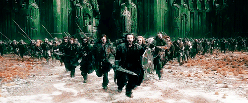

Prelude:
After Bard killed the dragon Smaug, the Men of the Lake and the Wood-elves both laid siege to the Dwarves in the Lonely Mountain, the thirteen Dwarves of the Lonely Mountain under Thorin II Oakenshield having refused to share any of the treasure that they had recaptured from Smaug.
Thorin and Company were then trapped in a bloodless siege, with Thranduil and Bard hoping to wait them out. However, Thorin had sent messages of his plight to his relatives using talking messenger Ravens, such as Röac the Raven, that lived on the Lonely Mountain. These reached Dáin Ironfoot of the nearby Iron Hills, and he marched to the Lonely Mountain with 500 heavily armed Dwarves, mostly skilled veterans of the War of the Dwarves and Orcs.
When Dáin's forces arrived, a battle was almost joined between the two sides (now three armies were on the field) but at the last moment, Gandalf intervened between the two and revealed that while they were bickering amongst themselves, the Goblins of the Misty Mountains and Grey Mountains under Bolg were using the opportunity to march against them. They had been incited by Gandalf's earlier slaying of the Great Goblin, but had now mobilized for a full-scale attack after hearing news of the death of the Dragon and the now relatively unguarded treasure hoard.
Battle:
The three commanders agreed that the Goblins and Wargs were the enemies of all and previous grievances between them were put on hold in face of the greater threat. They arranged their forces on the two spurs of the Mountain that lined the valley leading to the now-sealed off great Gate of Erebor; the only entrance to the Mountain that remained unblocked (any others had been destroyed by Smaug long before). The 500 Dwarves and 200 or so Lake-men formed up on one spur and over 1000 Elves on the other, while a light rear-guard lined across the mouth of the valley to lure the Goblins between the two spurs of the mountain, and thus destroy them. Bilbo Baggins tried to sit out the battle on Ravenhill which was held by the Elves and where Gandalf had also withdrawn to.
Soon the Goblins and Wargs arrived, and at first the plan worked: they were lured into the choke point and took heavy losses. However, due to their superior numbers, the allied Free peoples did not hold the advantage long. The second wave was even worse than the first, and due to their sheer number now many Goblins scaled the mountain from the opposite side, and began to attack the arrayed forces from above and behind, as the main wave pressed forward. The battle raged across the Mountain, and then a great noise was heard: Thorin and his twelve Dwarf companions inside the mountain had thrown down a section of the stone wall they had erected across the mouth of the gates, killing many Goblins. Thorin and Company emerged, covered in the best armour and armed with the best weapons in Erebor.
Then Thorin cried, "To me! To me! Elves and Men! To me! O my kinsfolk!", and charged down into the valley to join the battle with many Dwarves and many Men and Elves joining his charge. Thorin advanced through the Goblins' ranks all the way up to the huge Goblins that formed the bodyguard of Bolg, but could not get past them. Also his battle-line was too short, the flanks unprotected and thus his attack soon crumbled, Thorin and many others were cut off and hard beset by Bolg's bodyguard. The battle degenerated into a chaotic close quarters melee, no quarter asked or given.
As the battle was turning fully against the Free Folk, a large army of Giant Eagles of the Misty Mountains arrived, led by the Great Eagle. Bilbo was the first to spot their entrance on the scene and began shouting that "the Eagles are coming!", a shout that was then continued among the other troops of the Free Folk. At this point Bilbo was knocked in the head by a large stone thrown by a Goblin from above on the Mountain, and he was knocked out. With the support of the Giant Eagles, the Goblins that had scaled Erebor were driven off.
The tide was eventually turned, when Beorn himself arrived at the battle, apparently having heard news that a large army of Goblins were on the move. This time he did not appear in his former shape of a giant Man, but in that of a gigantic Bear. Beorn drove through the Goblin lines, but paused to carry the wounded Thorin out of the battle with his paw. Beorn then returned to the battle with even greater wrath and scattered the bodyguard of Bolg, before ultimately crushing Bolg himself. The Goblins panicked and scattered, to be picked off by hunting forces from the victors later.
Aftermath:

Thorin had been mortally wounded on the field, and his nephews Fíli and Kíli died defending him as he lay on the ground with shield and body. Thorin died soon after the battle, after he had met Bilbo one last time and had taken back the harsh words he had spoken before.
After defeating the Goblins and Wargs, the victors divided the treasure. Bard took Bilbo's fourteenth share of the gold and silver in return for the Arkenstone, whereupon he shared his reward with the Master of Lake-town and gave the Elvenking Thranduil the emeralds of Girion. Bilbo, despite having forfeited his share, was offered a rich reward by Dáin Ironfoot but refused to take more than two small chests of gold and silver.
It is said that three quarters of the Goblin warriors of the North were killed on that day. The Goblins of the Misty Mountains and the Dwarves both were significantly spent after the battle, and until the War of the Ring, the North remained quiet on both sides.
Losses:
| Lake-Men, Elfs and Dwarfs | Goblins and Wargs | |
|---|---|---|
| Casualties |
Lake-Men: Half of the forces ~ 150 Woodland Elfs: At least 250 Elfs Dwarfs: 145 Iron Hill's soldiers |
Catastrophic losses Three parts of the goblin warriors of the North perished ~ 1,072 Orcs and Goblins ~ 16 Trolls and 8 Ogres Hundreds of Wargs Many bats |
| Leaders Lost |
Thorin Oakenshield Fili and Kili |
Bolg |